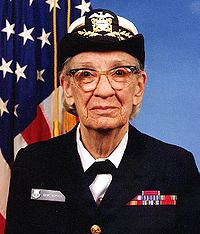

| Andel kvinnor | Andel män | Trend för kvinnor | |
|---|---|---|---|
| Studerande på univer/högskola | 60% | 40% | Ingen förändring |
| Studerande på Tekn. högskola | 34% | 66% | Stigande |
| Anlagda doktorsexamina | 50% | 50% | Stigande |
| Avlagda civ. ing. examina | 27% | 73% | Något stigande |
Vem var den första programmeraren?
Den första programmeraren var Ada Lovelance från London. Hon är mest hågkommen för sitt arbete med Charles Babbages mekaniska dator, den analytiska maskinen. Hennes anteckningar om maskinen innehåller den första algoritm som är avsedd att bearbetas med en maskin. Därför beskrivs hon ofta som historiens första datorprogrammerare. Innan jag fick reda på informationen trodde jag defenitivt att den första programmeraren var från 1900-talet och att det var en man. Men det som överaskade mig mest var att hon var från tidigt till mitt 1800-tal.
Vem var Grace Hopper?
 Grace Hopper, född den 9 december 1906 i New York, död den 1 januari 1992 i Arlington, Virginia, var en amerikansk dator-pionjär och sjöofficer. Hon var bland annat med och utvecklade Harvard Mark I och skapade den första kompilatorn. Hennes Flow-Matic var den första kompilatorn som översatte engelska till maskinspråk, och blev klar 1952. När man senare såg ett behov av en kompilator anpassad för att skriva datorprogram för ekonomi och annan företagsinriktad hantering (engelska common business orientation) ledde hon en grupp som med Flow-Matic som utgångspunkt skapade COBOL (COmmon Business Oriented Language) som blev klart 1959 i sin första version.
Vem var Hedy Lamarr?
Hedy Lamarr, egentligen Hedwig Eva Maria Kiesler var en österrikisk-amerikansk skådespelare och uppfinnare. År 1942 fick Hedy Lamarr och tonsättaren George Antheil patent på sin uppfinning Secret Communication System som möjliggjorde automatiskt frekvensbyte mellan 88 olika kanaler. Syftet med uppfinningen var att försvåra spårning av radiostyrda torpeder. Uppfinningen registrerades, men användes inte förrän många decennier senare av privata företag. Tekniken användes först 1962 av amerikanska militären under blockaden av Kuba.
Den "bandspridningsteknik" som Lamarr bidrog till lade även grunden till det som idag bildar vår tekniska plattform, som utgörs av mobiltelefoner samt andra trådlösa enheter. År 1997 hedrades hon med Electronic Frontier Foundation (EFF) Pioneer Award. Senare samma år blev Hedy Lamarr den första kvinnliga mottagaren av BULBIE ™ Gnass Spirit of Achievement Award, ett prestigefyllt pris som anses vara en ”Oscar” för uppfinnare. Hon ses som en visionär vars tekniska skarpsinne var långt före sin tid.